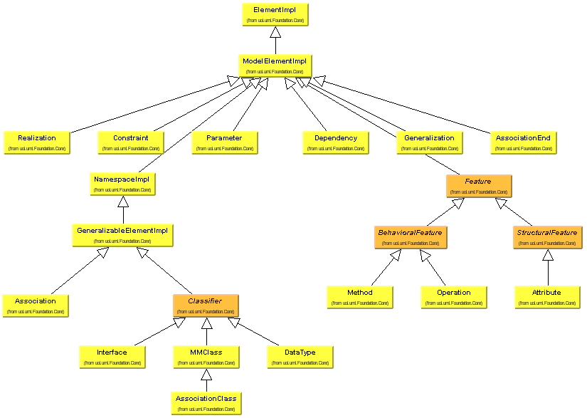
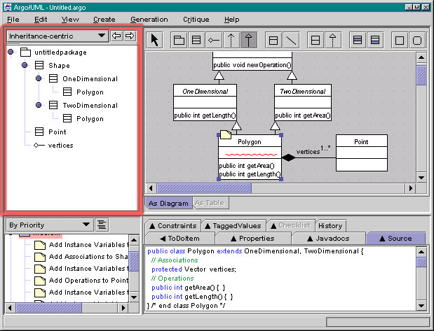

| This is a cluster of classes that are of note in the uci.uml.Foundation.Core package.
This design comes straight from the UML specifications. There shouldn't be any need to make changes to the meta-model
because it is nearly complete. All that needs created are new graphical figures to represent the meta-model. Note: All package names with capital letters in them are part of the meta-model. For example, uci.uml.Foundation.Core is part of the meta-model whereas uci.uml.visual is not. |

Back to Argo/UML Home